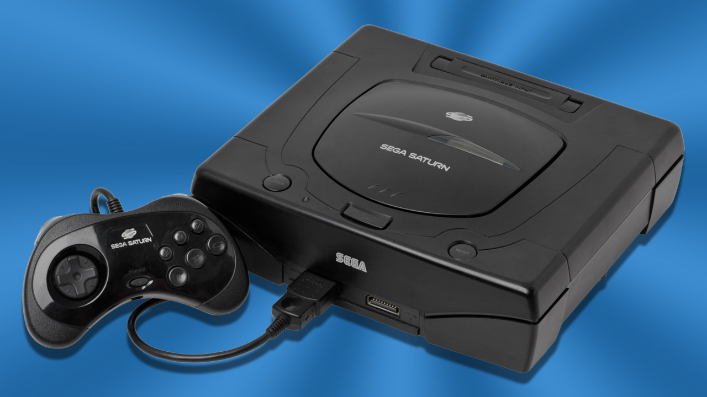
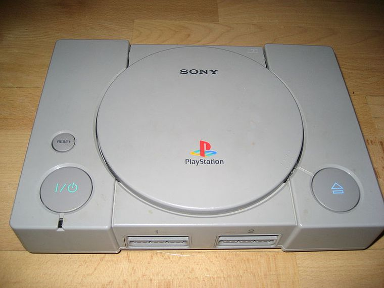
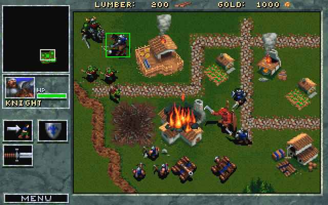

>
Este es un año clave en el lanzamiento de consolas, las más destacadas fueron PlayStation
y SEGA Saturn, sucesora de la Megadrive, era una plataforma ideal para los juegos con gráficos en 2D, muchos de ellos imposibles de ver otros sistemas. No llegaría hasta
el mercado no nipón hasta 1995.
Caben destacar ciertos títulos de su catálogo: Shining Force III y su Premium Disc, Panzer Dragoon Saga, Grandia, Street Fighter Zero 3, o Dungeons & Dragons Collection, entre otros.
Con la salida de la consola de Sony al mercado, la Saturn fue perdiendo terreno y más adelante, con la llegada de la Nintendo 64 quedó relegada al tercer lugar
por la lucha en el mercado de los videojuegos.
<

>
La PlayStation llega a Japón, Sony comienza un proyecto llamado PlayStation X
que finalizaría con el lanzamiento de la consola el 3 de diciembre de 1994
en Japón y al año siguiente en los Estados Unidos y Europa.
Junto con Saturn, fueron las primeras consolas en aprovechar el sistema de CD, pionero
en la época, y que cimentaría las bases para el progreso venidero.
Entre su catálogo cabe destacar sagas como: Metal Gear Solid, Winning Eleven,
Resident Evil, Tomb Raider, Tekken, Gran Turismo, Medievil, Final Fantasy o Crash Bandicoot.
Fue una consola completamente exitosa, barriendo a toda su competencia, y
convirtiéndose en una de las más vendidas de la historia.
<

> Blizzard presenta Warcraft, publicado en Enero de 1994 en Estados Unidos
y un año más tarde en Europa, supuso un punto de inflexión en los juegos
de estrategia en tiempo real, pasando a ser un superventas.
Estaba inspirado en Warhammer.
El videojuego nos permite ponernos en mandos
de orcos o humanos. Su punto fuerte estaba en la inteligencia artificial que poseía.
<